2013
| I like to keep copies of the pictures we get in
our Christmas cards each year. It is such a blessing to receive
Christmas cards and to find out how everyone is doing. I love this
tradition. |
|
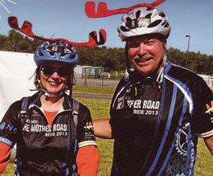 |
|
| Tom & Emily Teasdale - always up to some adventure! | Bellon family |
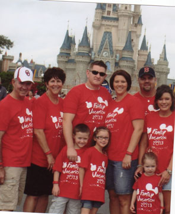 |
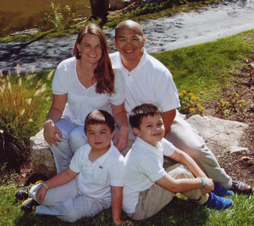 The Nguyens - Stacey, Michael, Alex, & Nick |
| Tommy and Linda Baker & Crew | |
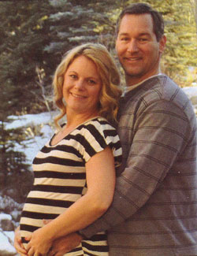 |
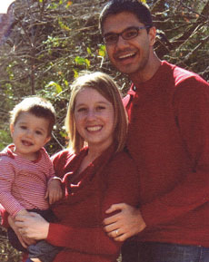 |
| Todd & Shani Lannert - with the future baby Lannert! | Ankur, Melanie, & Jonah Rughani |
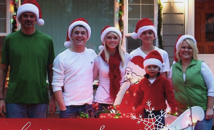 The Mark Casazzas: Mark, Justin (Cami's boyfriend), Cami, Cody, Colt, and Jodi |
|
| Sascha the much-adored doggie of Doug & Myra Parker, and for good reason! |
|
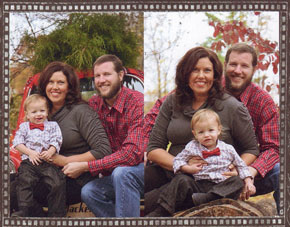 The Bloomer Bunch: Keith, Desirae, and Brodie |
|
| I can never stop at just one shot of Brodie | |
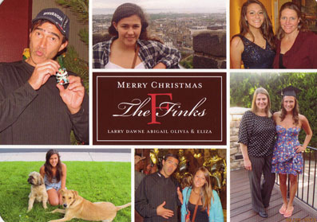 |
|
| The Finks - Larry, Dawne, Abigail, Olivia, and Eliza | |
|
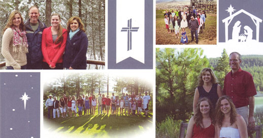 The Larry Casazzas - Larry, Mary Beth, Rebecca, and Katie |
|
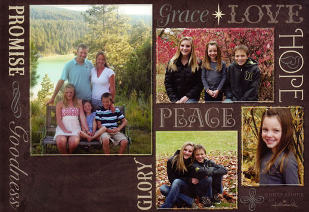 |
|
| The Jeb Casazza family: Jeb, Amy, Madison, Coulter, & Aubrey | |
Our good buddies the Perfettas had a big year this year - turning 40, 10-year wedding anniversary (celebrated with a trip to the Galapagos Islands), 15 years with ConocoPhillips, and moving back to Alaska. We're kicking ourselves for not going to see them while they were in Houston, but hey, Alaska is a great place to visit too, right?!! |
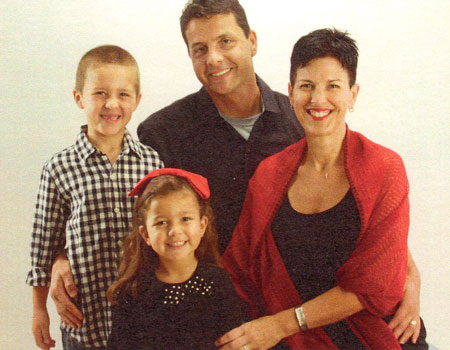 |
| The Jolleys: Chad, Amy, Caleb, and Piper | |
| Wei Li, Jiayi Chen, and beautiful Isabel - our Chinese niece! | |